Shapeshifter.js - 2020
A JavaScript Library for Animating SVGs


Shapeshifter.js is a JavaScript library that dynamically transforms low poly SVGs into each other.
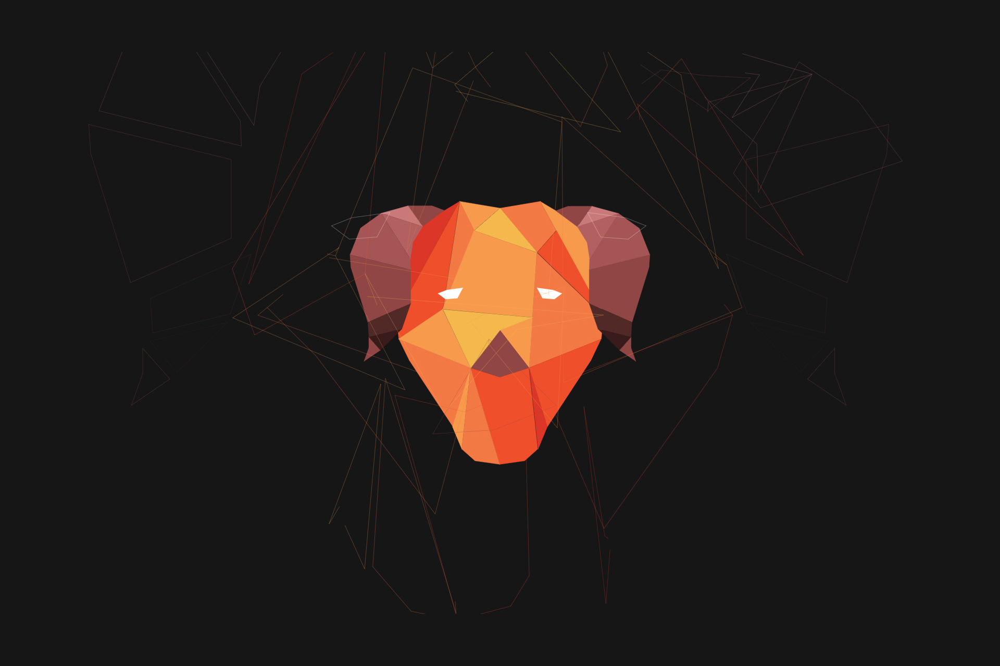I drew the shapes then I scanned and traced them into vectors using Adobe Illustrator.
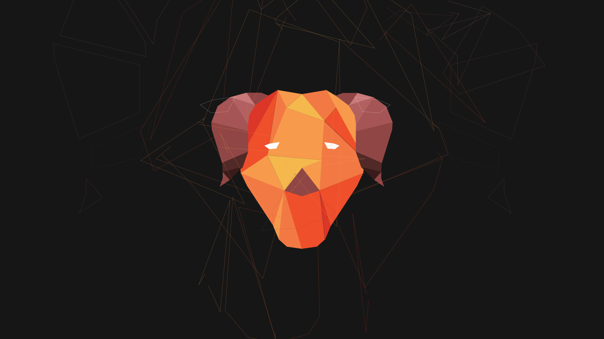 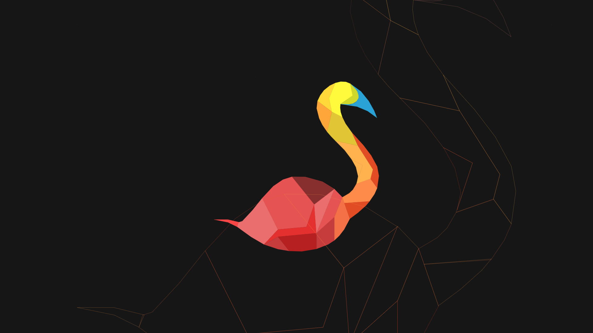 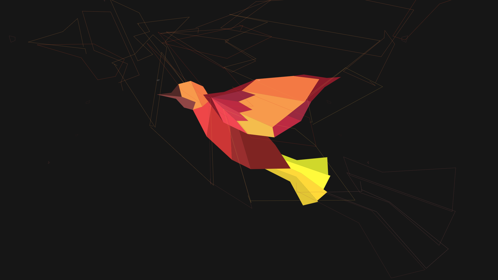The shapes don't need to have the same number of polygons and the polygons don't need to have equal number of points. The polygons can also have different colors and opacity. You can pass an option argument to adjust the speed, scale, and shape of the objects and transformations.
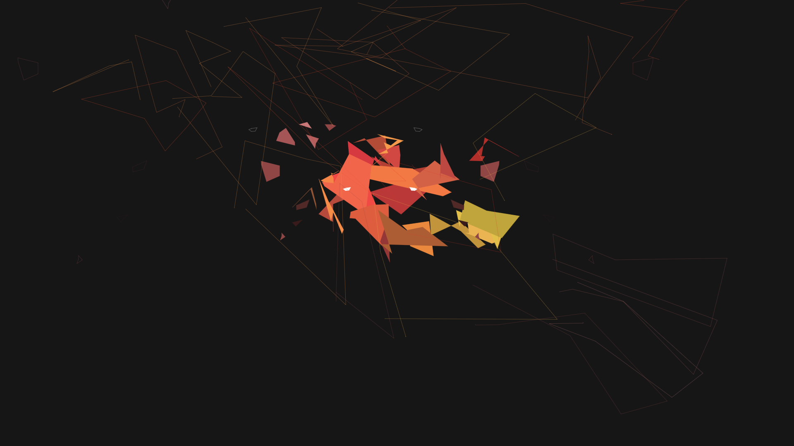 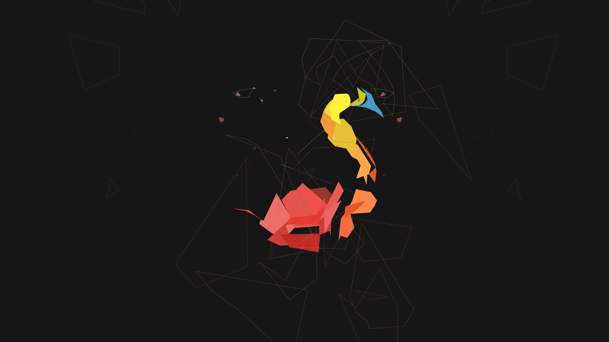 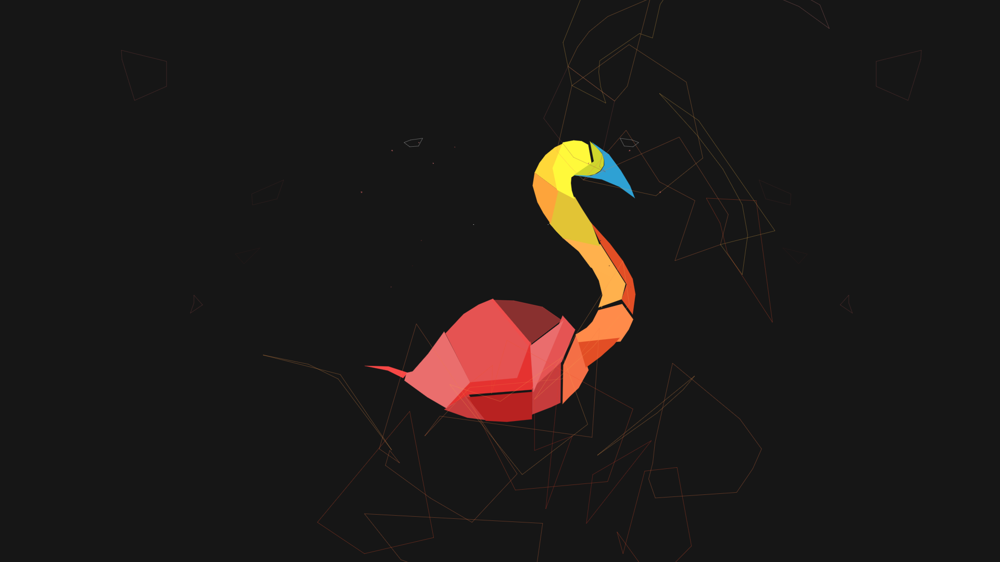 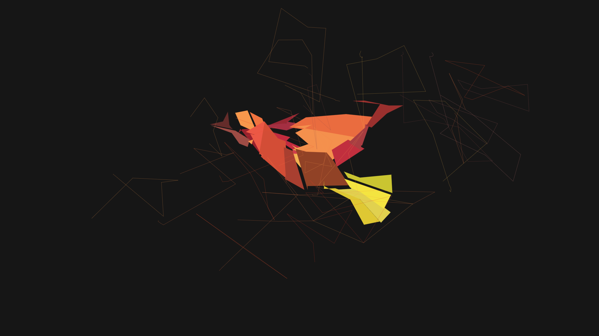 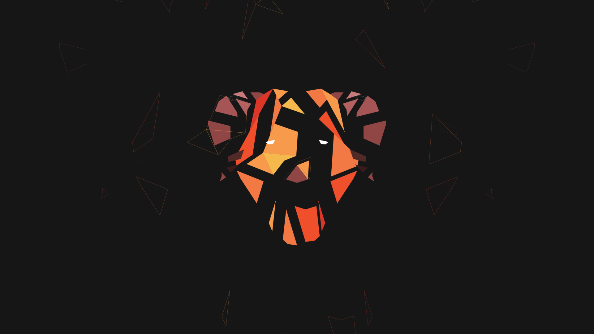 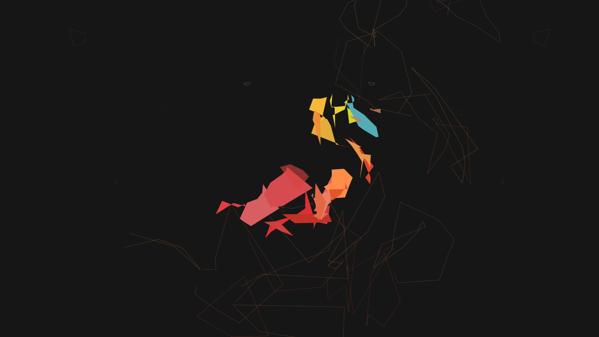 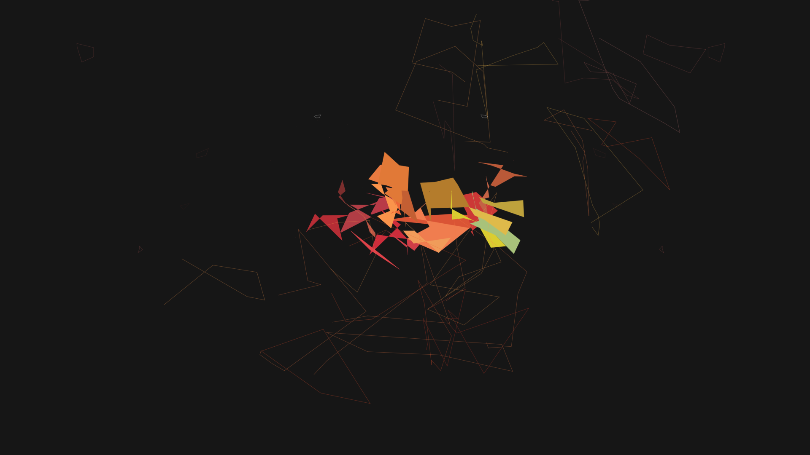